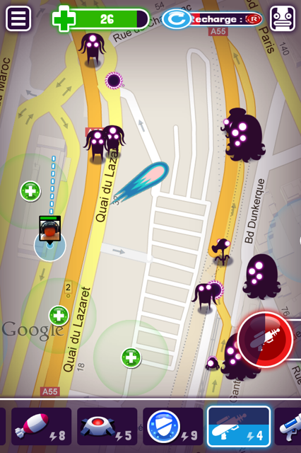

The game
Meatspace Invasion is location-based game, free-to-play on iOS.You need to go outdoor to play a session, many invaders appears around you, most of them follow and hit you, so you have to shoot them to survive as long as possible. They have many behaviors, some can hit you with an high range, in melee, others can heal themselves.
In parallel you have a set of weapons, you have to use each of them in appropriate situations.
You can play it single or with players around you.
Meatspace Invasion won the Best Real World Game prize at IMGA and Innovation prize at EIGD
My tasks
I worked on Meatspace Invasion at Mekensleep, a French studio mostly known for its game Soul Bubbles. I added new monsters, their behavior, modified some older ones, fixed bugs, created events, updated the data base, made unit test...
It was very interesting to use several tools and technologies, like node.js, Expresso, Mongo DB, Google App Engine and Mercurial.
Final words
A location-based game presented a big and interesting challenge. The hardest part was to give the love of practicing game outdoor, while their displacements, and/or with other players around.
I really enjoyed my work environment. In a human-size team, one person have more responsibilities. I thank all my co-workers who participate in it.
Unfortunately the game is no longer available.